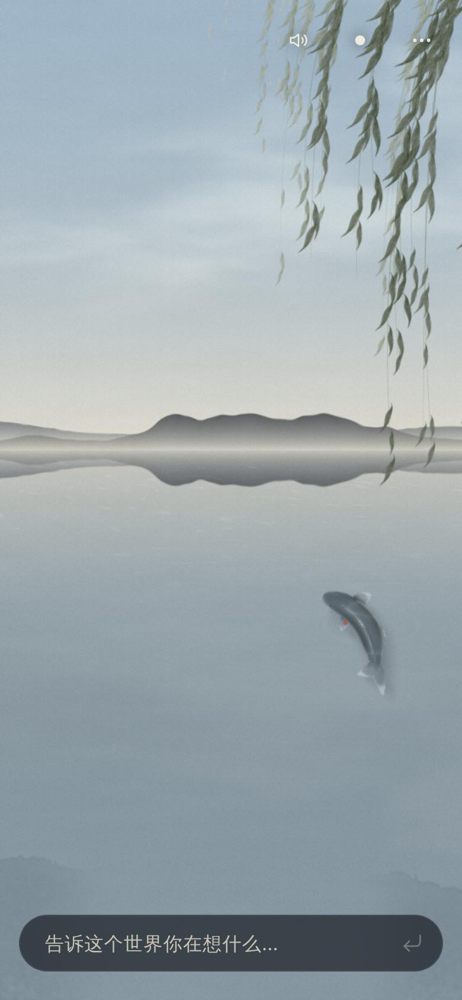

飞鹊 · 柳景尺度对照
Claude 第四版静帧 + 原始三姿素材。用于看大小、位置和羽色，尚未接入引擎。


以 alpha > 32 的可见宽度计，三姿约占原画布宽度的 85%。这里用统一比例显示，不逐帧拉伸；近远分别约 30px 与 16px（以 390px 画幅计）。胸腹锚点沿用候选值 (0.37, 0.51)。
位置滑块只把静态鸟放到不同地点；没有模拟飞速、遮挡、翼声或柳叶反应。月夜明度只是 CSS 对照参数，不能直接当作引擎光照值。未重绘背景或素材，也不以此代替实际飞行动画验收。